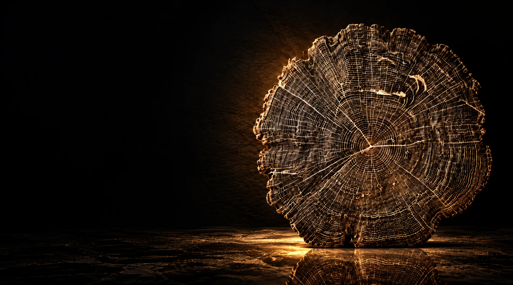
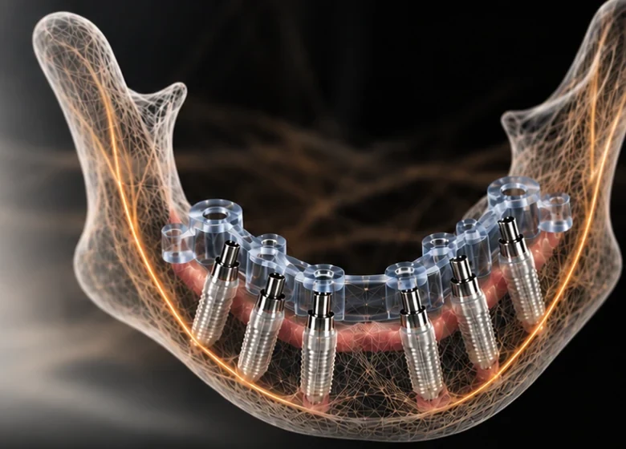
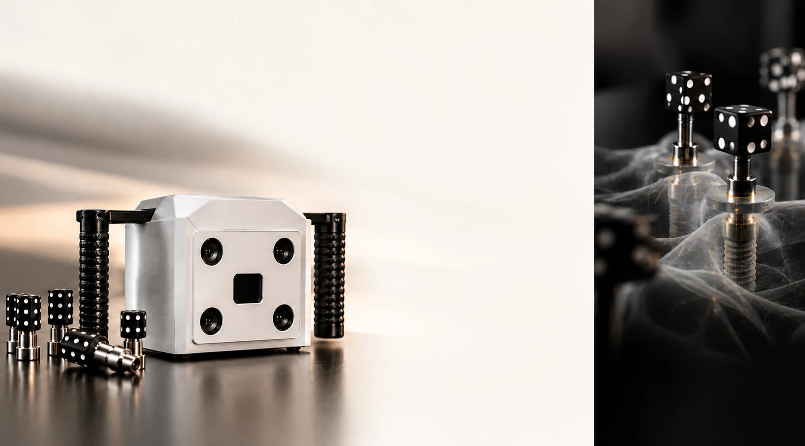
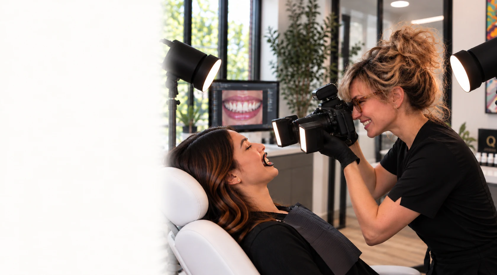
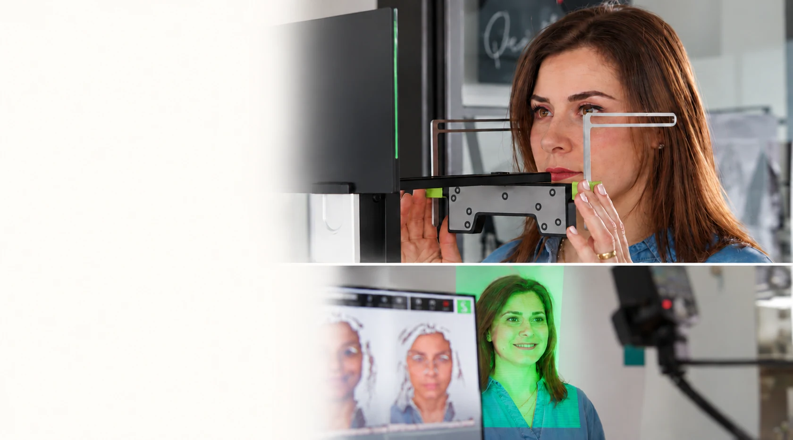
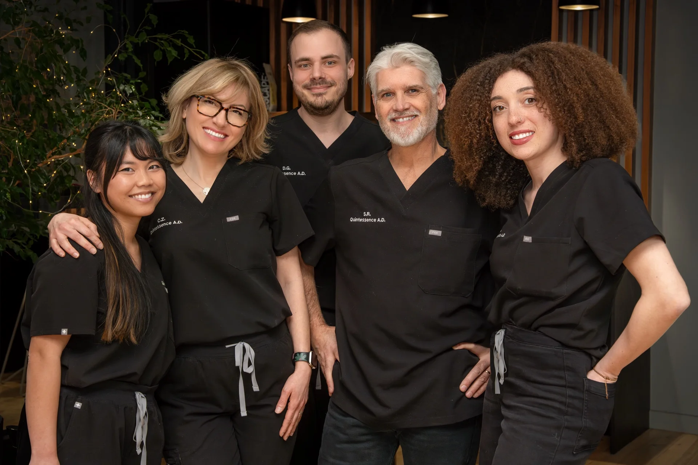

Une approche unique
pour chaque patient.
De la planification à la restauration finale, nos expertises allient technologie de pointe et maîtrise artisanale pour offrir des résultats prévisibles, durables et profondément naturels.
Découvrir nos expertises
Une seule référence.
Chaque étape maîtrisée.
De la planification à la mise en charge immédiate, chaque élément s’intègre dans une même séquence pour un résultat prévisible, sécurisé et reproductible.
Notre accompagnement le jour même 01Guide de base
01Guide de base 02Guide de forage
02Guide de forage 03Provisoire
03Provisoire 04Ensemble final
04Ensemble final

Une précision qui simplifie
vos cas complexes.
La photogrammétrie iCAM enregistre avec une grande précision la position tridimensionnelle des implants, pour des réhabilitations complètes plus prévisibles.
- Précision clinique
Positions implantaires enregistrées avec une exactitude de l’ordre du micron.
- Flux 100 % numérique et passif
Sans empreinte conventionnelle.
Sans jig de validation.
Moins de rendez-vous pour vos patients. - Plus de confort, plus de sérénité
Des données fiables et reproductibles pour une restauration parfaitement adaptée, dès la première mise en charge.
Des données exactes.
Sans compromis.

Une esthétique
sur mesure.
Invitez vos patients à notre atelier pour une analyse chromatique personnalisée, sous un éclairage contrôlé.
- Analyse chromatique
- Photos normalisées pour eLAB
- Échange personnalisé
Durée : environ 20 minutes.
Organiser une visite
Le visage
comme référence.
Grâce aux systèmes Face Hunter et Plane Finder (Zirkonzahn), nous intégrons l’analyse faciale directement au workflow numérique.
- Intégration des mâchoires dans le visage
- Cohérence entre esthétique et fonction
- Planification guidée par les proportions naturelles
Durée : environ 30 minutes.
Parlons de votre cas
Créons ensemble
votre prochain cas.
Une collaboration fondée sur la confiance, la précision et le désir commun d’offrir le meilleur à chaque patient.